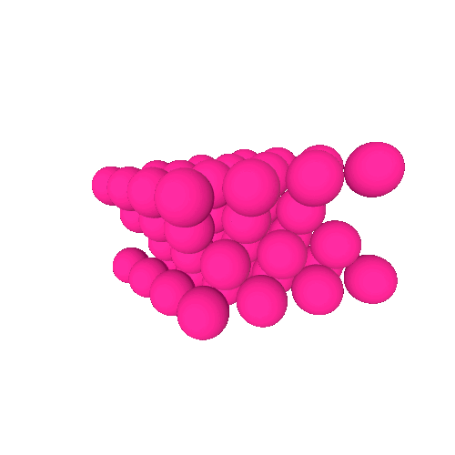
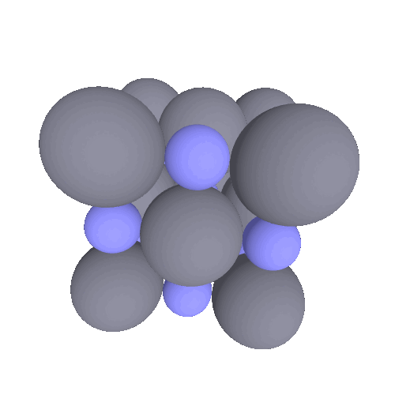

Materia. Es todo lo que tiene masa y ocupa un lugar en el espacio.
Estados de agregación de la materiaLas diversas sustancias pueden presentarse en diferentes formas, dependiendo de su presión y temperatura. Esta manera de manifestarse se conoce como estado de agregación, es la forma en la que están dispuestos los átomos o moléculas que componen al cuerpo en estudio.
Los estados de agregación más comunes de la materia son sólido, líquido y gaseoso. 
▶En la materia en estado sólido, los átomos o moléculas se agrupan cerca unos de otros en ubicaciones fijas. Los átomos o moléculas en un sólido pueden vibrar u oscilar alrededor de un punto fijo, no se mueven entre sí, dando a los sólidos su familiar volumen fijo y forma rígida. El hielo, el diamante, el cuarzo y el hierro son ejemplos de materia sólida.
Las sustancias en este estado poseen:
- Forma definida.
- Volumen constante.
- Fuerzas de atracción (cohesión) muy fuertes.
- Energía cinética de las partículas es pequeña.
- Energía potencial posee un valor alto.
- Distancia entre partículas muy pequeñas.
- Son incompresibles.
La materia sólida puede ser cristalina, en cuyo caso sus átomos o moléculas se organizan en patrones geométricos con orden repetitivo de largo alcance. Ejemplos tenemos la sal y el diamante.
O puede ser amorfa, en cuyo caso sus átomos o moléculas no tienen orden de largo alcance. Ejemplos de sólidos amorfos incluyen vidrio, caucho y plástico.
▶En la materia líquida, los átomos o moléculas están cerca unos de otros (casi tan cerca como las moléculas en un sólido), pero son libres de moverse entre sí. Al igual que los sólidos, los líquidos tienen un volumen fijo porque sus átomos o moléculas están en estrecho contacto. Sin embargo, a diferencia de los sólidos, los líquidos adoptan la forma de su recipiente porque los átomos o moléculas pueden moverse libremente entre sí. El agua, la gasolina, el alcohol y el mercurio son ejemplos de materia líquida.
Las sustancias en este estado:
- Adoptan la forma del recipiente que los contiene.
- Poseen un volumen propio.
- Poseen fuerzas de cohesión bajas.
- Son muy poco compresibles.
- Energía cinética de sus partículas es aproximadamente igual a su energía potencial.
- Mayor distancia intermolecular.
▶En la materia gaseosa, los átomos o moléculas están separados por grandes distancias y pueden moverse libremente entre sí. Debido a que los átomos o moléculas que componen los gases no están en contacto entre sí, los gases son comprimibles. Para inflar un neumático de bicicleta, por ejemplo, se empujan más átomos y moléculas al mismo espacio, comprimiéndolos y endureciendo el neumático. Los gases siempre asumen la forma y el volumen de sus contenedores. El oxígeno, el helio y el dióxido de carbono son buenos ejemplos de gases. 
Las sustancias en este estado poseen:
- No tienen forma definido.
- Llenan por completo, el recipiente que los contiene.
- Fuerzas de cohesión prácticamente nulas.
- Su energía cinética es muy alta comparada con su energía potencial.
- Grandes distancias intermoleculares.
- Pueden comprimirse en un grado relativamente importante.
La tabla siguiente resume las propiedades de sólidos, líquidos y gases.
| Estado |
Movimiento molecular / atómico |
Espaciado molecular / atómico |
Forma |
Volumen |
Compresibilidad |
|---|---|---|---|---|---|
| Sólido | Vibración / oscilación alrededor de un punto fijo | Muy cercanos | Definida | Definido | Incompresible |
| Líquido | Movimiento libre a través de otros átomos | Muy cercanos | Indefinida | Definido | Incompresible |
| Gas | Movimiento libre a través de otros átomos | Muy separados | Indefinida | Indefinido | Compresible |

Clasificación de la materia
La materia puede ser una sustancia pura, o una mezcla.
Sustancias purasLas sustancias puras están compuestas por un solo tipo de átomo o molécula.
Las sustancias puras se pueden dividir en dos tipos:
▶Sustancias simples (Elementos químicos). Son sustancias formadas por átomos de una sola especie, es decir, por un solo elemento químico. Todos los elementos químicos de la tabla periódica son sustancias simples. No se pueden descomponer en sustancias mas simples por métodos químicos. El cobre es un ejemplo de elemento. El grafito de los lápices también es un elemento: el carbono.
Aluminio

Iodo

Mercurio
▶Sustancias compuestas (Compuestos químicos). Son sustancias formadas por la combinación química de átomos de dos o mas especies, es decir, por diferentes elementos químicos combinados químicamente. Cualquier compuesto químico es una sustancia compuesta.
Los compuestos químicos son más comunes que los elementos químicos porque la mayoría de los elementos son químicamente reactivos y se combinan con otros elementos para formar compuestos. El agua, la sal de mesa y el azúcar son ejemplos de compuestos.
Cloruro de litio

Seleniuro de plomo

Nitruro de titanio

MezclasUna mezcla es la combinación de dos o más sustancias puras (dos o mas elementos, dos o mas compuestos, elementos y compuestos) en proporciones variables y que se pueden separar en sustancias mas simples por métodos físicos. No están unidas químicamente, sino simplemente mezcladas entre sí.
La mayor parte de la materia que encontramos se encuentra en forma de mezclas. El jugo de manzana, el fuego, el aderezo para ensaladas y la tierra son ejemplos de mezclas; cada uno de ellos contiene varias sustancias con proporciones que varían de una muestra a otra. Otras mezclas comunes incluyen aire, agua de mar y latón. El aire es una mezcla compuesta principalmente de nitrógeno y oxígeno gaseoso; el agua de mar es una mezcla compuesta principalmente de sal y agua; y el latón es una mezcla compuesta de cobre y zinc.
Las mezclas se clasifican según la uniformidad con que se combinan las sustancias dentro de ellas en:
▶ Mezclas homogéneas. Es la combinación no química de diferentes sustancias simples (elementos), de diferentes sustancias compuestas (compuesto químicos), o de sustancias simples con sustancias compuestas. Presentan una sola fase, es decir, su composición se mantiene constante en cualquiera de sus partes y NO se pueden distinguir a simple vista los diferentes componentes de la mezcla.
En una mezcla homogénea, como agua salada o té endulzado, la composición es la misma en todas partes. Las mezclas homogéneas tienen composiciones uniformes porque los átomos o moléculas que las componen se mezclan uniformemente.

▶Mezcla heterogéneas. Es la combinación no química de diferentes sustancias simples (elementos), de diferentes sustancias compuestas (compuesto químicos), o de sustancias simples con sustancias compuestas. Presentan una dos o mas fases, es decir, su apariencia no es uniforme, y SI se pueden distinguir a simple vista los diferentes componentes de la mezcla.
En una mezcla heterogénea, como petróleo y agua, la composición varía de una región a otra.
En resumen:
- La materia puede ser una sustancia pura o puede ser una mezcla.
- Una sustancia pura puede ser un elemento o un compuesto.
- Una mezcla puede ser homogénea o heterogénea.
- Las mezclas pueden estar compuestas por dos o más elementos, dos o más compuestos o una combinación de ambos.
********** FIN DE PAGINA **********